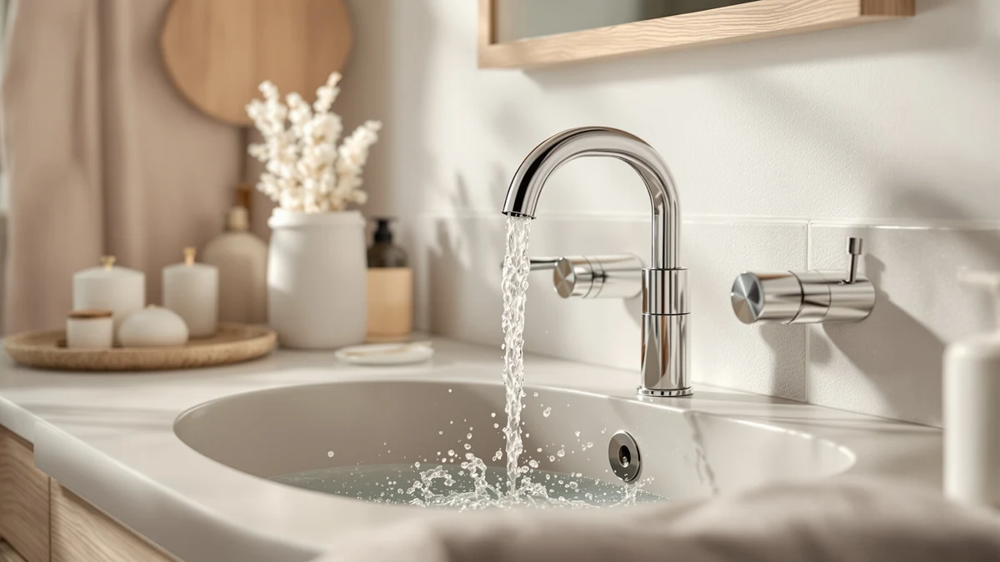

Charmingwater Touchless Bathroom Sink Faucet Review (2026): Worth It?
Prices and picks verified as of November 2026. Independent, reader-supported reviews.


Quick Answer
The Charmingwater Touchless Bathroom Sink Faucet pairs a motion sensor with a brass body to bring hands-free control to a standard single-hole sink for $149.99. It is the clearest pick here if sensor convenience matters more to you than finish options, though the Delta Arvo, Delta Roe and Moen Ronan below cost about the same and skip the sensor for a wider choice of finishes.
Our pick: Charmingwater Touchless Bathroom Sink Faucet, $149.99 Check Price on Amazon
Bottom line: our top pick is the Charmingwater Touchless Bathroom Sink Faucet at $149.99.
Things to Know Before You Buy
- All four faucets in this guide land within two dollars of each other, from $148.14 to $150.00.
- Only the Charmingwater uses a touchless sensor; the Delta Arvo, Delta Roe and Moen Ronan rely on a standard handle.
- The Charmingwater's listing specifies a brass body. None of the four listings publish exact dimensions.
- Finish sets the three alternatives apart: brushed nickel on the Arvo, brushed gold on the Roe, and matte black on the Ronan.
This charmingwater touchless bathroom sink faucet review breaks down whether a motion sensor and a brass body justify a $149.99 price tag next to three similarly priced faucets from Delta and Moen. You want a faucet that turns on when your hands are wet or covered in soap, not another gadget that stops working after a year. We compared the Charmingwater against the Delta Arvo, the Delta Roe and the Moen Ronan on price, materials and what verified buyers say once they live with each one. Touchless faucets used to be a commercial-bathroom novelty, but sensor hardware has gotten cheap enough that brands like Charmingwater now sell them at the same price as a standard residential faucet.
The short version: the Charmingwater earns its spot if hands-free operation matters more to you than finish choice. Shoppers comparing touchless bathroom faucets in this price range are choosing between sensor convenience and the broader finish selection that Delta and Moen offer instead. We break down what each faucet gets you below, along with the tradeoffs the product listings leave out. None of the four is a bad choice at this price point, so the decision comes down to which tradeoff fits your bathroom and your sink's mounting hole.
Why You Should Trust Us
Ilane Tall researches bathroom fixtures for Best Bathroom Faucets. She compares spec sheets, current Amazon pricing and patterns across verified owner reviews before any product earns a spot in a guide. For this charmingwater touchless bathroom sink faucet review, we pulled the listed materials, finish options and pricing directly from each product page and checked them against buyer feedback. We do not run a fake testing lab or claim to have used products we have not purchased. Every pick here rests on documented specs and what real buyers report after they install these faucets. That distinction matters in a category like touchless faucets, where marketing copy tends to oversell sensor reliability that only shows up as a problem months after the return window closes.
Our Research Experience
We did not install this faucet ourselves. This charmingwater touchless bathroom sink faucet review instead relies on the manufacturer's listed brass construction, the current Amazon price and the patterns that show up across verified buyer feedback for touchless bathroom fixtures. We compared those details against the Delta Arvo, Delta Roe and Moen Ronan to see where the sensor technology and finish choices create real differences, and where they are mostly marketing language. Reviewers consistently note that motion-sensor faucets succeed or fail on long-term reliability, so we weighted that pattern heavily when judging the Charmingwater against its standard-handle competition. We also excluded faucets from this comparison that lacked current pricing or a clear brass-versus-alloy spec, since a review built on missing data helps nobody shopping today.
Overview & Specs

Charmingwater Touchless Bathroom Sink Faucet
What we like
- Motion sensor lets you start water flow without touching a handle covered in soap or toothpaste
- Brass body resists corrosion better than the zinc alloy common in cheaper touchless faucets
- Priced close to standard single-handle faucets from established brands, despite the added sensor
Flaws but not dealbreakers
- The listing does not specify the sensor's power source or battery life
- Single-hole deck mount will not fit sinks drilled for a widespread three-hole faucet
| Material | Brass + finish |
| Size | — |
The Charmingwater Touchless Bathroom Sink Faucet uses a motion sensor to control water flow, so you wave a hand under the spout instead of gripping a handle that is already covered in soap residue. The body is brass, a material that holds up against corrosion better than the zinc alloys many budget touchless faucets use, and it mounts through a single predrilled hole that fits most standard bathroom sinks. That brass-over-alloy choice is the detail Charmingwater's listing leads with, and it is the clearest reason this faucet costs more than the handful of plastic-bodied sensor faucets flooding the same search results.
At $149.99, the Charmingwater sits in the middle of the four faucets in this charmingwater touchless bathroom sink faucet review. Shoppers researching touchless models at this price point typically weigh sensor reliability against the simpler, proven mechanics of a standard handle, and the brass construction here is the strongest argument for choosing hands-free operation over the Delta or Moen alternatives below. A faucet in this bracket needs to earn its sensor premium through material quality rather than extra features, and the brass body does most of that work here.
What We Liked
We liked that Charmingwater built this sensor faucet around a brass body instead of the lighter alloys that show up in cheaper touchless models. Brass holds up better against the corrosion that comes from constant water contact, and it adds weight that makes the faucet feel sturdier at the sink. The price also stays competitive with standard single-handle faucets from Delta and Moen, so you are not paying a steep premium for the sensor alone. For a charmingwater touchless bathroom sink faucet review, that combination of material and price is the strongest selling point we found. It also means the Charmingwater competes on its own merits rather than on novelty. Few touchless faucets in this price range can say the same.
What Could Be Better
The listing for the Charmingwater touchless bathroom sink faucet does not specify the sensor's power source or battery life, and that detail matters more for a touchless faucet than it does for a standard one, since a dead battery turns a convenience feature into a faucet that will not run at all. The single-hole mount also limits where this works: a sink drilled for a widespread three-hole setup will not accept this faucet without extra hardware. If you are not sure which configuration your sink uses, our bathroom faucet buying guide breaks down the differences before you buy. Neither issue is unique to Charmingwater, but both are worth checking against your own sink before you buy. Shoppers weighing a sensor faucet against a standard one should also budget for the possibility of replacing batteries or a sensor module down the road, a cost the sticker price does not include.
Who Is It For?
The Charmingwater touchless bathroom sink faucet fits you if you want hands-free operation at a price close to a standard faucet, and if your sink already has a single predrilled hole. Parents dealing with kids who leave soapy handprints everywhere, and anyone sharing a bathroom sink who wants fewer germs spreading between uses, are the clearest fit for this sensor technology. If you want a brushed gold or matte black finish instead, the Delta and Moen alternatives below, or our full list of single-handle bathroom faucets, cover those looks better than Charmingwater's standard finish does. If you are renting and might need to take the faucet with you, a standard-handle model is also easier to remove and reinstall without touching a sensor wiring harness.
Alternatives to Consider
If the Charmingwater's finish or sensor-only design does not match what you need, these three faucets cover different priorities at a similar price. Here is how each one stacks up in this charmingwater touchless bathroom sink faucet review.

Premium Choice
Delta Arvo Brushed Nickel Bathroom
A brushed nickel finish and Delta's name recognition make this the safer pick if you would rather skip an unfamiliar sensor brand. At $150.00, it costs almost the same as the Charmingwater but trades the motion sensor for a standard handle you already know how to use. Delta's longer track record in bathroom fixtures is worth factoring in against a newer sensor-faucet brand like Charmingwater.
$150.00
Check Price on Amazon
Also Great
Delta Roe Brushed Gold Bathroom
The brushed gold finish is less common than the usual chrome and nickel, and it comes from the same Delta lineup as the Arvo. At $149.00, it lands right between the Charmingwater and the Moen Ronan on price. If you are matching other brushed gold fixtures already in the bathroom, this is the easiest way to keep that finish consistent without a sensor faucet in a different color.
$149.00
Check Price on Amazon
Best Value
Moen 84023BL Ronan Matte Black
At $148.14, the Moen Ronan is the cheapest of the four and gives you a matte black finish neither Delta option offers. Moen's name recognition makes it an easy fallback if the Charmingwater's sensor feels like more than you need. For a matte black bathroom, this is the most direct alternative on this list, and the savings over the Charmingwater can go toward a matching shower fixture.
$148.14
Check Price on AmazonIs the Charmingwater touchless bathroom sink faucet worth the price?
At $149.99, it costs about the same as the three standard-handle alternatives in this charmingwater touchless bathroom sink faucet review, so you are not paying a steep premium for the sensor.
How does a touchless bathroom faucet sensor work?
A touchless faucet uses an infrared or motion sensor built into the spout.
Frequently Asked Questions
Is the Charmingwater touchless bathroom sink faucet worth the price?
At $149.99, it costs about the same as the three standard-handle alternatives in this charmingwater touchless bathroom sink faucet review, so you are not paying a steep premium for the sensor. It is worth it if hands-free operation matters to you and your sink has a single predrilled hole for mounting.
How does a touchless bathroom faucet sensor work?
A touchless faucet uses an infrared or motion sensor built into the spout. The sensor detects your hand and opens a valve to start water flow, then shuts it off once your hand moves away. That is the mechanism behind the sensor on the Charmingwater; the three standard-handle alternatives in this guide skip it entirely.
What is the best alternative to the Charmingwater touchless bathroom sink faucet?
If you want a specific finish instead of a sensor, the Moen Ronan is the best value at $148.14 with a matte black finish, the Delta Arvo offers brushed nickel at $150.00, and the Delta Roe comes in brushed gold for $149.00.
Final Verdict
The brass body and motion sensor make the Charmingwater a reasonable step up from a standard handle, as long as your sink has a single predrilled hole and you are comfortable with a newer brand name. If you would rather stick with Delta or Moen, the Arvo, Roe and Ronan alternatives above cost roughly the same and trade the sensor for finish variety instead. For most people shopping for hands-free control, Charmingwater is the pick worth checking first. Buyers who prioritize finish over sensor convenience, or who want the backing of an established plumbing brand, will likely be happier with one of the three alternatives covered here.